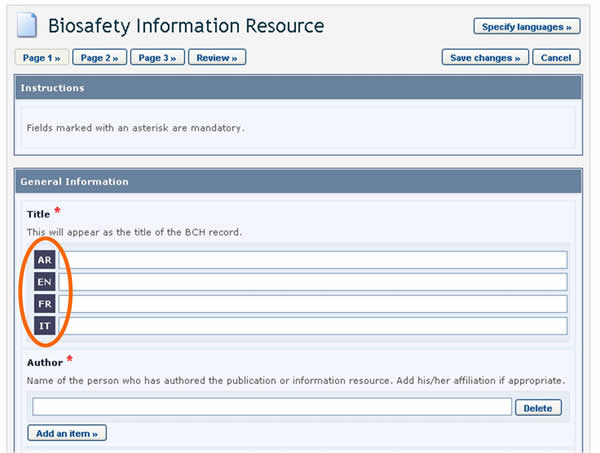
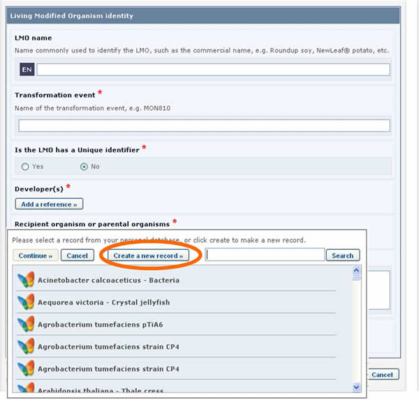
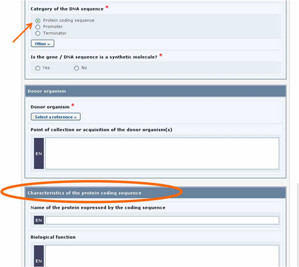

The following diagram shows the general steps required to register or edit information on the BCH.
Figure 8
The following pictures present the typical on-line forms, explaining the usage of their different fields.

Figure 9
The components highlighted in the these figures are the following:
-
Record Name: The light-blue coloured boxes describe the type of information you are registering.
-
Field names: The bold text is the field name in which information is to be entered.
-
Radio Buttons: Click on the option you would like. Note that you can only select one of them.
-
Add Reference button: This button accesses a drop down menu of records already registered in the BCH that you can link to the record you are working on. If the record is not in the menu, you can create a new record with the new information by clicking on the Create button. A second Common Format will appear on the screen where you will be able to create the new record. Once you have finished entering the information and saved the new record, you will return to the original Common Format you were working on. Some fields allow you to add references to other sources of information than BCH records:
-
4.1. Add Website: Enables you to add a link to a website. Because links often become broken over time, it is always preferable to attach a file instead of providing a link so that it is permanently available.
-
4.2. Attach File: Enables you to attach a file. You can attach files to your records in any language (Attach File button). However, it is highly recommended to provide courtesy translations of the documents in one or more of the United Nations official languages.
-
4.3. Add an Item: Enables you to add further information (e.g. more telephone numbers).
Figure 10
-
-
Checkboxes: When there are short lists of controlled vocabulary (i.e. a pre-defined list of possible terms: see the BCH glossary for definition), they are sometimes presented as checkboxes. To add or select one or more terms, click on the checkboxes that appear next to them.
-
Other button: If the term you are looking for does not appear in the controlled vocabulary list, click the Other button. Select the term that best describes the new term (this will help searches for the record you are registering), or choose other again if there is no related term. Enter the new term and click on the Continue button.
Figure 11
-
Select button: Clicking this button opens a dropdown menu of terms from the controlled vocabulary list. Click on the term you want to select and click on Continue.
Figure 12
-
Review button: After entering all of the information you can click on the review button and view your record as it will appear upon publication. It is very important to review the record for completeness and accuracy prior to submission for publication. If there are errors in the fields, they will be displayed with an error description for each one. Mandatory fields that are not completed are also highlighted. In order to make the necessary changes, return to the registration pages.
-
Save changes button: Clicking on this button opens a window where you are given the option of (i) publishing the record or (ii) saving it as a draft for access at a later time.
-
Cancel button: Clicking on this button opens a window and you are given the option of discarding the changes made to the draft by clicking Confirm.
-
Page number buttons: In the upper and lower part of the registration page there are buttons to navigate through the different pages of the Common Format.
Mandatory fields
When creating new records, BCH users must make sure that the information is as accurate and complete as possible prior to publication. The mandatory fields are marked with a red asterisk. Records in which the mandatory information has not been provided will not be published.

Figure 13
BCH users can choose the language or languages in which to register BCH records. However, it is required that all records are submitted in at least one of the six official UN languages (i.e. Arabic, Chinese, English, French, Russian and Spanish), in addition to any other language(s) of choice. Clicking the Specify Language button, which appears at the top of the online registration form, opens a window which allows you to select the languages in which to enter information. The checkboxes allow for selecting official UN languages, while the dropdown menu allows for selecting any other language. Once the languages are selected, fields in the form will display an entry for each selected language.

Figure 14

Figure 15
References to other records
Sometimes, while entering information, you may be asked to refer to an existing BCH record (i.e some fields refer to information that is registered in another document) or create a new one based on a different Common Format.
Let us take as an example the references to the recipient organism or parental organisms that are required when registering an LMO.

Figure 16
LMO records require that a reference to another record is provided in the Recipient organism or parental organisms field. By clicking on the Select a reference button, you can select a reference to an existing document from the list that appears.
Figure 17
If the reference that you need is not available in the list (i.e. it has never been registered in the BCH), you may create a new record using the button Create new record.

Figure 18
In this case, the form to be completed will appear on the screen over the one that was previously being edited. It will need to be completed and published before it is made available in the dropdown reference list of the previous form.

Figure 19
See Section “Completing off-line Common Formats” for a description about how this is implemented using the off line format documents.
Fields displayed according to answers provided previously
In some cases, when entering the information, questions will be asked to the user. Depending on the answer provided, additional fields will appear on the screen to be completed.

Figure 20
For example, in the form above, when the Protein coding sequence option is selected under the Category of a DNA sequence section, a new section called Characteristics of the protein coding sequence will appear on the screen (see picture below).

Figure 21
Similarly, if the Tolerance to abiotic stress option is selected, a new section will appear displaying the list of all possible tolerances to abiotic stress.

Figure 22
See Section “Completing off-line Common Formats” for a description about how this is implemented using the off line format documents.
Additional Information fields
All of the Common Formats provide an Additional Information field at the end of the record where you can add text, provide an internet address (URL), and attach additional file(s).

Figure 23
Timeframes for confirming or updating document content
In order to keep certain records, such as Competent National Authorities, up-to-date, they require confirmation or update after one year from the date of submission. After the deadline, the author of the record will be asked to confirm or update the record within 3 months. If this has not been done at the expiry of this period, the record will be marked as “Not Confirmed”.

Figure 24
In some cases, the expiration period is optional and the author is asked, when registering the document, to indicate whether confirmation or updating will be required after two years from the date of submission. Choosing this option will mean that the author will receive a reminder after two years to keep the information up-to-date.
Figure 25
|
National documents | |
|
Type of document |
Timeframe |
|
National Focal Points |
One year (mandatory) |
|
National Biosafety Website or Database |
One year (mandatory) |
|
Competent National Authority |
One year (mandatory) |
|
Biosafety Law, Regulation, Guidelines & Regional and International Agreements |
Two years (optional) |
|
Country's Decision or any other Communication |
Two years (optional) |
|
Risk Assessment Generated by a Regulatory Process |
Two years (optional) |
|
Biosafety Expert |
Four years (mandatory) |
|
Report on Biosafety Expert Assignment |
No confirmation or updating required. |
|
Reference documents | |
|
Type of document |
Timeframe |
|
Contact |
One year (mandatory) |
|
Capacity Building Activities, Projects and Opportunities |
One year (mandatory) |
|
Biosafety Organization |
One year (mandatory) |
|
Biosafety Information Resource Centre (BIRC) |
No confirmation or updating required. |
|
BCH News |
No confirmation or updating required. |
|
Risk assessment generated by an independent or non-regulatory process |
Two years (optional) |
|
Living Modified Organism (LMO) |
No confirmation or updating required. |
|
Gene and DNA sequence |
No confirmation or updating required. |
|
Organism |
No confirmation or updating required. |